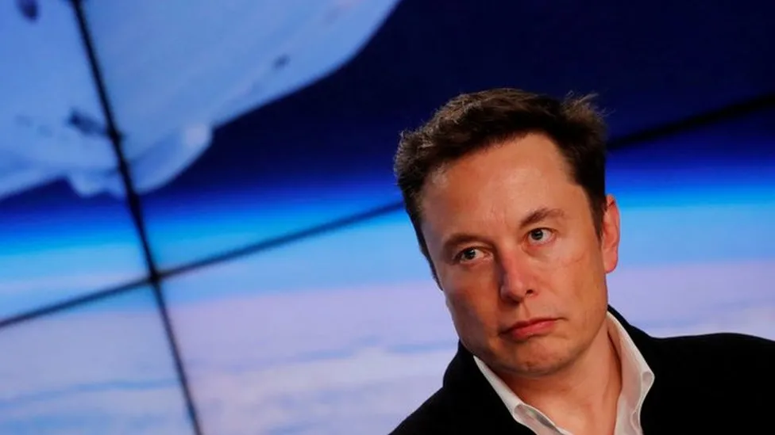

SpaceX accused of unlawfully firing staff critical of Elon Musk
data:04.01.2024
By Mariko Oi
Business reporter
SpaceX has been accused of unlawfully firing eight workers who were critical of its multi-billionaire chief executive Elon Musk.
A complaint by a US labour agency says the employees sent an open letter to the firm's executives in 2022, detailing workplace concerns. The letter called him a "distraction and embarrassment", according to Reuters news agency. The BBC has approached the rocket and satellite firm for comment. The complaint by a regional official at the National Labor Relations Board (NLRB) accused SpaceX of violating the workers' rights under federal labour law which allows co-workers to jointly advocate for better working conditions. The complaint also said those involved in the open letter were interrogated before being discharged. Lawyers for one of the former employees, Deborah Lawrence, have reportedly accused SpaceX of having a "toxic culture", where harassment is tolerated. In a statement, seen by Reuters, Ms Lawrence said: "We wrote the open letter to leadership not out of malice, but because we cared about the mission and the people around us". The NLRB's general counsel acts like a prosecutor and brings cases to the five-member board appointed by the organisation's president. If SpaceX does not settle, the case will be heard by an administrative judge, whose decision can be appealed to the board and then to a federal appeals court. A hearing is scheduled for 5 March. If the NLRB finds that the firings violated labour law, it can order that workers be reinstated and given back pay. Mr Musk's companies have been accused of violating employees' rights before. In October, the NLRB accused X, formerly known as Twitter, of illegally firing an employee over tweets challenging the company's return-to-office policy. X denied wrongdoing. Electric car maker Tesla has also faced several NLRB complaints, which included allegations of race discrimination at its factories. Tesla has said it does not tolerate discrimination. In August, the US Department of Justice sued SpaceX, alleging it discriminated against refugees and asylum seekers in its hiring practices. At the time, Mr Musk posted on X: "US law requires at least a green card to be hired at SpaceX, as rockets are considered advanced weapons technology".